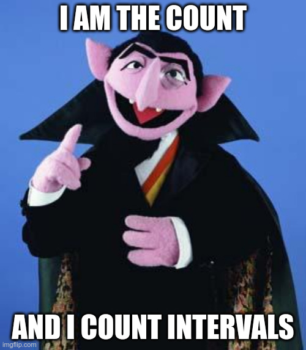

In what concerns the continuous evaluation solving exercises grade during the semester, you should submit until 23:59 of October 25th
(this exercise will still be available for submission after that deadline, but without couting towards your grade)
[to understand the context of this problem, you should read the class #03 exercise sheet]

Tom really likes sorted integer sequences and he now needs your help for counting elements.Given a sorted sequence of N integer numbers and Q queries, each one indicating an interval range to search for, your task is to find how many numbers in the sequence are in the queried interval.
The first line of input contains an integer N, the quantity of numbers in the sorted sequence. The second line contains the sequence itself with N space separated integers (we denote each one by Si). It is guaranteed that these come in increasing order, but there might be repeated numbers.
The third line contains an integer Q, the quantity of queries to consider. Each of the following Q lines contains a query in the form of two integers two integers Ai and Bi, indicating we are considering the interval [Ai, Bi].
The output should contain exactly Q lines. The i-th line should contain amount of numbers in the sequence that are in the interval [Ai, Bi], that is, how many Sj sequence numbers exist such that Ai ≤ Sj ≤ Bi.
The following limits are guaranteed in all the test cases that will be given to your program:
| 1 ≤ N ≤ 105 | Quantity of numbers in the sequence | |
| 1 ≤ Si ≤ 109 | Numbers in the sorted sequence | 1 ≤ Q ≤ 105 | Quantity of queries |
| 1 ≤ Ai ≤ Bi ≤ 109 | Intervals that will be queried |
| Example Input | Example Output |
10 2 2 2 3 5 5 8 8 8 8 5 1 9 3 5 4 7 6 7 1 1 |
10 3 2 0 0 |
Explanation of the example: